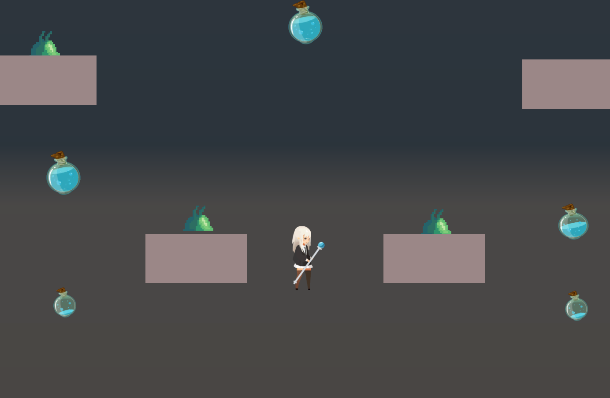

I Maxed Out All My Stats in Building Magic and Nothing Else
By Shawn Chiang
Developed using C# and Unity.
Controls
An original game that centers around a witch's ability to build platforms. Traverse and deal with enemies by utilizing your different types of buildables. Reach the end of each level by reaching a door and make sure to watch your mana bar!
Largely developed by me. Assets from the Unity Store.
Credits (Unity Asset Store):